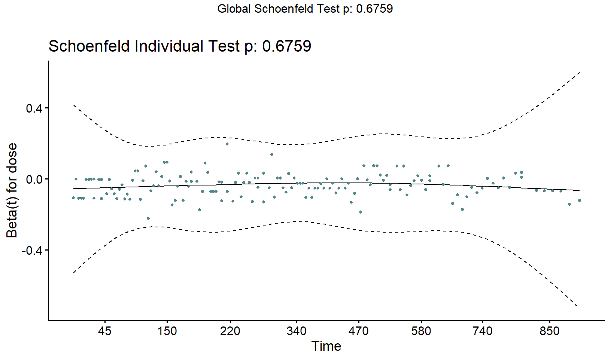

Prison Addicts
1.1 Basic Exploration
I can’t seem to find any documentation explaining the experiment this data corresponds to. So let’s see if we can figure out the gist of it.
| skim_type | skim_variable | n_missing | numeric.hist |
|---|---|---|---|
| numeric | id | 0 | ▇▇▆▇▇ |
| numeric | clinic | 0 | ▇▁▁▁▃ |
| numeric | status | 0 | ▅▁▁▁▇ |
| numeric | days_survival | 0 | ▇▅▆▃▁ |
| numeric | prison | 0 | ▇▁▁▁▇ |
| numeric | dose | 0 | ▁▇▇▃▁ |
So it looks like we’ve got the following:
ID is just your basic identifier;
Clinic is a cluster variable. But there’s only two clusters, so not really enough to do a frailty model since that would only be two data points with which to estimate the sigma between clusters. Could be interesting to try out a stratified Cox though, or at least do those tests Singer and Willett mention to explore whether the clusters have different baselines;
Status is the event column;
Prison is ambiguous without documentation: are these people who are currently in prison, or people who have been in prison in the past? Either way, it will be a predictor to explore;
Dose is I guess the treatment. It is continuous, which will be fun.
I’m curious to explore the values within the Dose column a bit more:

So dosage amounts are pretty varied, with 15 distinct levels.
Ok. So now we can do some basic exploratory stuff with the event times for the whole sample. Singer and Willett recommend starting with the Kaplan Meier, Cumulative Hazard, and Kernel-Smoothed Hazard, so that’s what we’ll do.
We’ll use the canonical survival package, as well as the helpful survminer package for visualizations. The workflow starts with a weird first step: we need to create a ‘survival object’ of the type that the functions of the survival package can understand. This just takes the time_to_event and status columns of your dataset and turns them into a single column, where a number alone is a time-to-event, and a number with a plus sign beside it is time-to-censored. This is just the way they’ve decided to do things. Then we can use this ‘survival object’ to get the various curves we need.
So here we go:
# Create survival object
surv_object <- Surv(dat$days_survival, dat$status)
# Fit the Kaplan-Meier curve
km.full.sample <- survfit(surv_object ~ 1, data = dat)
# Plot the Kaplan-Meier curve
km_full_sample_plot <- survminer::ggsurvplot(
fit = km.full.sample,
conf.int = TRUE,
risk.table = TRUE,
surv.median.line = "v",
linetype = 1,
legend = "none",
palette = c("cadetblue4"),
title = "Kaplan-Meier Estimated Survival Curve",
xlab = "",
ylab = "",
ggtheme = theme_bw()
)
# Plot the Negative-Log cumulative hazard
cumhaz_full_sample_plot <- survminer::ggsurvplot(
fit = km.full.sample,
conf.int = TRUE,
linetype = 1,
legend = "none",
palette = c("burlywood4"),
title = "Negative Log Cumulative Hazard",
xlab = "",
ylab = "",
ggtheme = theme_bw(),
fun = "cumhaz"
)
# Plot the kernel-smoothed hazard
kernel_smoothed_full_sample <- kernel_smoothed_hazard(width=60, time=dat$days_survival * 2, survive=dat$status + 1) %>%
ggplot(aes(x = x, y = y)) +
geom_line(colour = "aquamarine4", size = 2, alpha = .8) +
geom_line(colour = "white", size = .2) +
ggtitle("Kernel-Smoothed Approximation of Hazard Function") +
xlab("Days After Completing amplify") +
ylab("Smoothed Hazard") +
theme_bw()
Things are looking pretty consistent here. You have the typical thing of hazard being low at first but then increasing at psychologically-salient anniversaries, IE the two-month mark and the one-year mark. Things also seem to really take off at the 500 day mark as well. Overall it looks sort of like a parabola.
Based on the data available, there are a few things I’m curious about:
- How does time-to-event vary with prison status?
- How does time-to-event vary with dosage amount?
- Does the effect of dosage amount on time-to-event vary in prison status? In other words, is there an interaction between dosage and prison status?
- Is the proportional hazards assumption justified given the possibility of different baseline hazards across clinics?
Let’s explore each of these questions.
1.2 How does time-to-event vary with prison status?
First let’s have a look at some stratified Kaplan-Meier curves to get a sense of the empirical relationship between prison and time-to-event:

Looks like prison people saw more events in the first month, then non-prison people caught up and things leveled-off for a short while, then once again prison people started seeing more events for most of the 2-years after the treatment. The curves cross around the 800-day mark, but this could simply be the product of noise due to the much smaller risk set at this late phase. The median lifetime (vertical dotted line) for non-prisoners seems to be about 125 days longer than the median lifetime for prisoners.
Cool. Now let’s think about modelling this relationship between time-to-event and prison status. It would be nice to use a basic Cox regression, because that way we don’t need to make any assumptions about the shape of baseline hazard. But to use a Cox regression, we need to make sure that the proportional hazards assumption is defensible. Is it defensible?
For starters, we can plot the cumulative hazard curves for the two groups in isolation. If the cumulative hazard curves aren’t generally parallel on the log scale then when it comes time to model we should probably think about doing one of the things Singer and Willett suggest we do when we seem to have different baselines, between strata, IE either:
- Do a stratified Cox regression;
- Do time-varying effects.
So let’s plot the stratified log cumulative hazard curves. To do this, we can start by getting the Kaplan-Meier estimates for the different strata. Then the resulting Kaplan-Meier fit object will contain everything we need to calculate log cumulative hazard and make a nice custom plot:
# Use the stratified Kaplan-Meier estimates to create a new table with the columns we need, namely:
# 1. Prison status;
# 2. Time-to-event for each person;
# 3. Log cumulative hazard at each event time;
# 4. Confidence intervals to sexy-up the plot.
tibble(
prison = as.factor(rep(c(0, 1), times = c(112, 99))),
time = km.prison.strata$time,
log_cumhaz = log(km.prison.strata$cumhaz),
conf_lower = log(-log(km.prison.strata$lower)),
conf_upper = log(-log(km.prison.strata$upper))
) %>%
# Plot
ggplot(aes(x = time, y = log_cumhaz, colour = prison, group = prison, fill = prison)) +
geom_point(shape = 3, size = 2) +
geom_line(size = 1) +
geom_ribbon(aes(ymin = conf_lower, ymax = conf_upper), alpha=0.3, linetype = 0) +
scale_colour_manual(values = c("cadetblue4","burlywood4")) +
scale_fill_manual(values = c("cadetblue4","burlywood4")) +
theme_bw() +
theme(
plot.title = element_text(face = "bold", size = 12),
legend.background = element_rect(fill = "white", size = 4, colour = "white"),
legend.justification = c(0, 1),
legend.position = "bottom",
axis.ticks = element_line(colour = "grey70", size = 0.2),
panel.grid.major = element_line(colour = "grey70", size = 0.2),
panel.grid.minor = element_blank()
)Based on this plot it looks like the log cumulative hazards are sort of proportional-ish. Things get a bit weird between days 70 and 150, and again after 600 days, but generally the prison group is above the non-prison group by a more-or-less consistent amount.
I don’t feel super comfortable making a call about the validity of the proportional hazards assumption based on this plot alone. Another way of investigating the validity of the proportional hazards assumption for a particular predictor (and take the decision out of pure judgement-call territory) is to look at the Schoenfeld residuals of a cox regression with only prison as a predictor. Then we can look at the p-value of the Schoenfeld residuals and use that as a cutoff in the typical significance-testing way.
# Fit a Cox regression
cox.prison.only <- coxph(surv_object ~ 1 + prison, data = dat)
# Get a zph object, which takes a Cox model object and returnslots of nice diagnostic information specifically about the proportional hazards assumption of that Cox model
zph_object_cox_prison <- cox.zph(cox.prison.only)
# Plot the Schoenfeld residuals with Survminer
survminer::ggcoxzph(zph_object_cox_prison, point.col = "cadetblue4")This all suggests that the effect of being in prison might vary over time a bit, but the Schoenfeld p-value isn’t below .05, so I guess we are justified in not worrying about that. Our conclusion is that we can feel good about adopting the proportional hazards assumption for the prison variable. So let’s fit a preliminary Cox model with prison as the only predictor, and see what the model thinks:
broom::tidy(cox.prison.only, exponentiate = TRUE) %>%
mutate(p.value = as.character(p.value)) %>%
select(-statistic) %>%
janitor::clean_names("title") %>%
knitr::kable(caption = "") %>%
kableExtra::kable_styling(bootstrap_options = "striped")| Term | Estimate | Std Error | P Value |
|---|---|---|---|
| prison | 1.201821 | 0.1642334 | 0.262982308757287 |
The model thinks that being in prison increases your Hazard by about 20% in relative terms at any given point in time. But it has a pretty wide standard error, with an estimate of 1 (no effect) falling just over one standard error from the estimate. Hence the non-significant p-value.
If instead we had found that prison varies a bunch over time then we could do a stratified regression by prison. But Singer and Willett point out that if we do this then we won’t get a parameter estimate for the influence of prison, and that’s a parameter estimate it would be nice to have. So instead we can relax the proportional hazards assumption by interacting prison with time. We’re not gonna do this now because our Schoenfeld residuals say we don’t have to but the authors of the Survival package have written some nice documentation about precisely how to do this.
Next let’s look at the real heart of the analysis: the treatment effect.
1.3 How does time-to-event vary with dosage?
The treatment here is a continuous variable, making it tricky to visually assess the proportional hazards assumption with stratified log cumulative hazard curves. We still could do it via Singer and Willett’s general approach to visualization with continuous variables, IE choosing a few exemplary values of the continuous variables to plot, or as they call it, “judicious categorization”.
So barring any background knowledge on which to base this assumption (I don’t even know what this experiment actually is), we’ll need to depend on our old friend the Schoenfeld residuals to assess the proportional hazards assumption:
# Fit a Cox regression
cox.dose.only <- coxph(surv_object ~ 1 + dose, data = dat)
# Get a zph object, which takes a Cox model object and returnslots of nice diagnostic information specifically about the proportional hazards assumption of that Cox model
zph_object_cox_dose <- cox.zph(cox.dose.only)
# Plot the Schoenfeld residuals with Survminer
survminer::ggcoxzph(zph_object_cox_dose, point.col = "cadetblue4")
Looks plenty flat to me, and a p-value far from .05. So we’re safe to assume that the proportional hazards model holds for the Dose variable.
So let’s go ahead and fit a basic Cox model with Dose as the only predictor to get an estimate of the hazard ratio. Actually, we’ve already fit the model to get the Schoenfeld residuals above. So let’s have a look at the regression outputs.
# Fit a Cox regression
broom::tidy(cox.dose.only, exponentiate = TRUE) %>%
mutate(p.value = as.character(p.value)) %>%
select(-statistic) %>%
janitor::clean_names("title") %>%
knitr::kable(caption = "") %>%
kableExtra::kable_styling(bootstrap_options = "striped")| Term | Estimate | Std Error | P Value |
|---|---|---|---|
| dose | 0.9647342 | 0.0059768 | 1.89020241735986e-09 |
Based on the estimated hazard ratio, the model thinks that each additional unit of dosage reduces hazard by about 3.5% in relative terms. So the model expects that if a person with a dosage of 0 has 50% hazard, then a person with a dosage of 1 will have a hazard of about (.50 * .965) ~ 48%, a person with a dosage of 10 will have a hazard of about (.50 * .96510) ~ 35%, and a person with a dosage of 100 will have a hazard of about (.50 * .965100) ~ 1.4%. This is what the model thinks.
Also wow, that is a very tiny p-value, which suggests that given the size and variance of the sample, the model’s estimate of the treatment effect does not seem compatible with a true effect of 0. In other words, if we assume that our sample of people is a perfect representation of some infinitely large group of people, then the model thinks that if we did this same experiment over and over and over infinitely many times, each time drawing a different random group of people from that infinite group of people of the same size as the experiment we actually did, then we would only see the effect we saw (or a bigger one) like 2 of every billion experiments. This is a pretty weird thing to say, but this is how p-values work.
So the model thinks the effect is of the treatment is big, with higher dosage reducing hazard. Another nice way of visualizing the treatment effect is to choose some theoretically interesting values of dosage and generate the model’s predicted survival curves for them. Since the model’s only predictor is dose, we can simulate some fake data with the dosage amount’s we’re curious about, and then use the survminer package’s surv_adjustedcurves function to plot the ‘recovered’ survival curves for them. (I’m not super clear on the most-used approaches for deriving these ‘recovered’ curves. Singer and Willett talk about the method where you replicate the process of getting your Kaplan-Meier calculations, but using the Cox-model-based risk scores in the risk set to determine the probabilities in each period rather than merely the size of the risk set. Not sure if this is what is happening here, but the surv_adjustedcurves documentation gets into it.)
# Create fake data with the desired values of dosage
bind_rows(
survminer::surv_adjustedcurves(cox.dose.only, data = tibble(dose = 0)) %>% mutate(dosage = "Dose = 0"),
survminer::surv_adjustedcurves(cox.dose.only, data = tibble(dose = 20)) %>% mutate(dosage = "Dose = 20"),
survminer::surv_adjustedcurves(cox.dose.only, data = tibble(dose = 40)) %>% mutate(dosage = "Dose = 40"),
survminer::surv_adjustedcurves(cox.dose.only, data = tibble(dose = 60)) %>% mutate(dosage = "Dose = 60"),
survminer::surv_adjustedcurves(cox.dose.only, data = tibble(dose = 80)) %>% mutate(dosage = "Dose = 80")
) %>%
# Plot
ggplot(aes(x = time, y = surv, group = dosage, colour = dosage)) +
geom_point(shape = 3, size = 2) +
geom_line(size = 1) +
scale_colour_manual(values=c("burlywood4", "deepskyblue4", "aquamarine4", "cadetblue4", "antiquewhite4")) +
theme_bw() +
theme(
plot.title = element_text(face = "bold", size = 12),
legend.background = element_rect(fill = "white", size = 4, colour = "white"),
legend.justification = c(0, 1),
legend.position = "bottom",
axis.ticks = element_line(colour = "grey70", size = 0.2),
panel.grid.major = element_line(colour = "grey70", size = 0.2),
panel.grid.minor = element_blank(),
legend.title = element_blank()
)This squid-like plot illustrates the degree to which the model thinks dosage matters in shaping event times.
So the effect of dosage is powerful. And in the previous section we also saw that prison status seems to be correlated with time-to-event. So let’s try a model where we include dose and prison together in the model and see if the effects are any different than in the models where each is the sole predictor:
# Fit the model with the two predictors together
cox.prison.dose <- coxph(surv_object ~ 1 + dose + prison, data = dat)
# Clean the model outputs for visualization
list(
cox.prison.only,
cox.dose.only,
cox.prison.dose
) %>%
map(broom::tidy, exponentiate = TRUE, conf.int = TRUE) %>%
map(~ mutate(., model = toString(term))) %>%
bind_rows() %>%
# Could compress into one line but I find it clearer to have multiple steps
mutate(
model = str_replace_all(model, ", ", " + "),
model = ifelse(!str_detect(model, "\\+"), paste(model, "only"), model),
model = str_to_sentence(model)
) %>%
# Plot
ggplot(aes(x = term, y=estimate, ymin=conf.low, ymax=conf.high, colour = model)) +
geom_pointrange(position = position_dodge(width = .2)) +
geom_hline(yintercept=1, lty=2) +
coord_flip() +
xlab("Predictor") +
ylab("Hazard Ratio (95% CI)") +
scale_colour_manual(values=c("deepskyblue4", "springgreen4", "burlywood4")) +
theme_bw() +
theme(
plot.title = element_text(face = "bold", size = 12),
legend.background = element_rect(fill = "white", size = 4, colour = "white"),
legend.justification = c(0, 1),
legend.position = "bottom",
axis.ticks = element_line(colour = "grey70", size = 0.2),
panel.grid.major = element_line(colour = "grey70", size = 0.2),
panel.grid.minor = element_blank()
)Basically no change in either predictor by including them both in the model together. Another way of seeing whether prison is worth including in the model is with -2LL significance tests. Here’s how this works:
- We assume changes in -2LL are chi-squared distributed;
- We calculate the difference in -2LL between the model with only
doseand the model with bothdoseandprison; - We ask whether that difference is statistically significant based on a 95%-threshold hypothesis test under a chi-squared distribution.
We can do all of this with R’s basic anova() function:
| Predictor | -2LL | Difference in -2LL | p.value |
|---|---|---|---|
| NULL | -705.5393 | NA | NA |
| dose | -687.0966 | 36.885470 | 1e-09 |
| prison | -686.4344 | 1.324296 | 0.249822584 |
Here we see that once dose is in the model, including prison has only a tiny effect on the model’s goodness-of-fit as measured by the -2LL, and this change is not statistically significant according to our chi-squared significance test. So we could feel ok about excluding prison from the model. But should we? I think the real answer is that it depends on our background knowledge, and what we’re trying to accomplish with this analysis. Despite the fact that prison doesn’t explain much variance within levels of treatment, we might still want to include it in the model if:
- We are especially interested in making inferences about the role of
prisonin shaping the time-to-event; - We’re working from a causal model that tells us that controlling for
prisonis important for getting an unbiased effect of another predictor we’re interested in. For example, maybe we thinkprisonis a common cause of the treatment and the outcome. If this were true, then controlling for prison would be a good idea to help us feel good about our estimate of the treatment.
Another way of getting at the question of whether prisoner is worth including in the model would have been to look at the plot of the Martingale residuals of the dose-only model against values of prisoner. But this doesn’t really work when the predictor you’re curious about, IE prisoner, is categorical as opposed to continuous.
1.4 Does the effect of dosage amount on time-to-event vary by prison status?
So we’ve established that including both prison as a fixed effect in a model that already includes dose doesn’t really improve the model’s goodness of fit. But maybe dosage amounts worked differently for people in prison and people not in prison. In other words, maybe there’s an interaction between prison and dose.
We can explore this by including a simple interaction in the Cox model and seeing whether it improves goodness of fit. We’ll just reuse the methods we’ve already used above, namely:
- Looking at tables of regression outputs;
- Looking at forest plots;
- Using chi-squared significance testing on -2LL of the various models.
| Term | Estimate | Std Error | P Value |
|---|---|---|---|
| dose | 0.9585780 | 0.0078239 | 1e-07 |
| prison | 0.5099255 | 0.7100058 | 0.342839 |
| dose:prison | 1.0148995 | 0.0117982 | 0.2100078 |
Whoa – looks like including the interaction effect has completely flipped the relationship between prison and time-to-event. With the interaction effect included, the model thinks that being in prison reduces your risk of seeing the event. This despite the fact that the interaction effect itself is rather tiny, and that its 95% interval contains 1, IE is consistent with the hypothesis that there is no effect. This shows that estimates and p-values aren’t everything.
Let’s get a closer look with a comparative forest plot:
Yup – looks like the model with the interaction effect completely flips the model’s mean estimate for prison. But it also makes it way more uncertain: just look at that giant 95% interval.
Did including the interaction improve goodness of fit? We can do the same anova thing we did above:
| Predictor | -2LL | Difference in -2LL | p.value |
|---|---|---|---|
| NULL | -705.5393 | NA | NA |
| dose | -687.0966 | 36.885470 | 1e-09 |
| prison | -686.4344 | 1.324296 | 0.249822584 |
| dose:prison | -685.6499 | 1.569020 | 0.21034932 |
Including the interaction seems to improve goodness-of-fit more than including prison did, but the difference is still not statistically significant. But still, including it has produced a very drastic and important change in our inference! Once again, p-values are not everything.
Interaction effects are hard to interpret based on squinting at numbers alone. So lastly, we can get a sense of what the model now believes by plotting a ‘triptych’, as recommended by McElreath. We’ll simulate some fake data to visualize the impact of the interaction. This is largely a copy-paste of the squid-monster code above, but now we’re faceting:
bind_rows(
survminer::surv_adjustedcurves(cox.interaction, data = tibble(dose = 0, prison = 0)) %>% mutate(dosage = "Dose = 0", prison = "Non-Prison"),
survminer::surv_adjustedcurves(cox.interaction, data = tibble(dose = 40, prison = 0)) %>% mutate(dosage = "Dose = 40", prison = "Non-Prison"),
survminer::surv_adjustedcurves(cox.interaction, data = tibble(dose = 80, prison = 0)) %>% mutate(dosage = "Dose = 80", prison = "Non-Prison"),
survminer::surv_adjustedcurves(cox.interaction, data = tibble(dose = 0, prison = 1)) %>% mutate(dosage = "Dose = 0", prison = "Prison"),
survminer::surv_adjustedcurves(cox.interaction, data = tibble(dose = 40, prison = 1)) %>% mutate(dosage = "Dose = 40", prison = "Prison"),
survminer::surv_adjustedcurves(cox.interaction, data = tibble(dose = 80, prison = 1)) %>% mutate(dosage = "Dose = 80", prison = "Prison"),
) %>%
# Plot
ggplot(aes(x = time, y = surv, group = prison, colour = prison)) +
geom_point(size = 1) +
geom_line(size = 1) +
scale_colour_manual(values=c("deepskyblue4", "burlywood4")) +
theme_bw() +
theme(
plot.title = element_text(face = "bold", size = 12),
legend.background = element_rect(fill = "white", size = 4, colour = "white"),
legend.justification = c(0, 1),
legend.position = "bottom",
axis.ticks = element_line(colour = "grey70", size = 0.2),
panel.grid.major = element_line(colour = "grey70", size = 0.2),
panel.grid.minor = element_blank(),
legend.title = element_blank()
) +
facet_wrap(~dosage)By including the interaction, we’ve essentially told the model that the relationship between dosage and time-to-event depends on whether you’re in prison or not. So it seems like what’s happening is that the model thinks prisoners are better off in the absence of any treatment or at low values of treatment (hence the flipped effect estimate for the fixed effect prison), but then as you increase the dosage, the benefits accrue more to non-prisoners than to prisoners. Taken literally, I think the interaction effect is saying “prisoner relative hazard increases as you increase the dosage”.
What to make of this? I’m not really sure. Frank Harrell says that we’re not really supposed to try and interpret the main effects in a model with an interaction, so the fact that the direction of the effect of prison totally switches is maybe not actually an important thing. But on the other hand, I’m dying to know why the model thinks this is how the interaction works.
One thing that might help us understand is to look at some descriptive plots for different levels of dosage, stratified by prison. The idea is that maybe at low dosages the prison people actually are better-off, and the opposite is true at higher doses. So here’s what I’ll do:
- Code a new
dosage_groupvariable with some arbitrary cutoffs: we’ll say you’re a ‘low’ dosage at 45 or less, a ‘medium’ between 45 and 70, and a ‘high’ above 70. - Draw some new Kaplan-Meier curves to see how the survival curves are different for prison and non-prison people within each dosage group. Rather than rely on survminer to draw the Kaplan-Meier curves like I did above, this time I’ll make the plots myself for greater control of aesthetics.
# Create a new dataset with arbitrary 'dosage groups'
dat_dose_strat <- dat %>%
mutate(dosage_group = case_when(
dose <= 45 ~ "low",
dose > 45 & dose <= 70 ~ "medium",
as.numeric(dose) > 70 ~ "high"
))
# Create survival object
surv_object_dosage_groups <- Surv(dat_dose_strat$days_survival, dat_dose_strat$status)
# Get Kaplan-Meier estimates
km.dosage.groups <- survfit(surv_object_dosage_groups ~ 1 + prison + strata(dosage_group), data = dat_dose_strat)
# Create survival object
surv_object_dosage_groups <- Surv(dat_dose_strat$days_survival, dat_dose_strat$status)
# Get Kaplan-Meier estimates
km.dosage.groups <- survfit(surv_object_dosage_groups ~ 1 + prison + strata(dosage_group), data = dat_dose_strat)
# Clean and plot
km.dosage.groups %>%
broom::tidy() %>%
janitor::clean_names() %>%
mutate(
prison = str_extract(strata, "\\d"),
dosage_group = factor(str_extract(strata, "high|medium|low"), levels=c("low", "medium", "high"))
) %>%
ggplot(aes(x = time, y = estimate, group = prison, colour = prison, fill = prison)) +
geom_point(shape = 3, size = 2) +
geom_line(size = 1) +
geom_ribbon(aes(ymin = conf_low, ymax = conf_high), alpha=0.2, linetype = 0) +
scale_colour_manual(values=c("deepskyblue4", "burlywood4")) +
scale_fill_manual(values=c("deepskyblue4", "burlywood4")) +
theme_bw() +
theme(
plot.title = element_text(face = "bold", size = 12),
legend.background = element_rect(fill = "white", size = 4, colour = "white"),
legend.justification = c(0, 1),
legend.position = "bottom",
axis.ticks = element_line(colour = "grey70", size = 0.2),
panel.grid.major = element_line(colour = "grey70", size = 0.2),
panel.grid.minor = element_blank()
) +
facet_wrap(~dosage_group)These janky Kaplan-Meier wannabes actually illustrate why the model fits the interaction the way that it does: we see that empirically, prisoners are actully better off at low doses of the treatment, even though when we average across dosage, as we implicitly did above with the Kaplan-Meier curves stratified by prison only, prisoners are worse-off across the board. This is a nice reveal that illustrates the importance of exploring interactions! But also, notice that there are fewer low-dosage prisoners overall, so this pattern could just be noise. Either way, it makes sense that the model would flip the direction of the effect of prison as a way of representing this difference between dosage groups. It doesn’t mean we have to take the model literally when it does this: it is just a way for the model to say what it is trying to say about the interaction, IE to say that prison people are at greater relative risk at higher doses compared to at lower doses. Don’t get sucked into the trap of interpreting the parameter estimates as causal.
Now we have an idea why the model with the interaction thinks what it thinks. But the model with the interaction fails the likelihood ratio test, so we don’t favour it on the grounds of goodness-of-fit. And we don’t really have a clear causal theory for why this interaction would exist. So which model should we believe? Maybe neither, but we can keep them both in mind.
1.5 Is the proportional hazards assumption justified given the possibility of different baseline hazards across clinics?
Let’s replicate our workflow above to plot the log cumulative hazards and Schoenfeld residuals for the clinic variable to see whether the proportional hazards assumption seems to hold.
Looks kind of proportional for the most part, except that they’re pretty neck-and-neck for the first couple months, and then people in clinic 1 start seeing more events than people in clinic 2 as of about day 500.
And now the Schoenfeld residuals:
You can sort of see how there is a downwards sloping trend in the plot at later times, which I think is just the residuals picking up on what we saw in the cumulative hazard curves, IE that people in clinic 1 start seeing way more events than people at clinic 2 at later times. And it looks like the p-value of the Schoenfeld residuals is significant, so we’re supposed to not feel great about the proportional hazards assumption for clinic. Whuh-oh.
What to do? Since this is clustered data we could do a frailty model, but there’s only two clusters, which is going to make for a pretty noisy estimate of the cluster-level variation. Maybe better to just do a stratified regression here. Singer and Willett prefer time-varying effects as a way of dealing with what seem to be different baseline hazards across clusters because with stratified Cox you lose the ability to model that variable. But they also say that if the clustering variable isn’t really of interest to you then sure, go ahead and do a Stratified cox. So that’s what I’ll do.
cox.dose.prison.clinic <- coxph(surv_object ~ 1 + dose + prison + strata(clinic), data = dat)
cox.interaction.clinic <- coxph(surv_object ~ 1 + dose + prison + dose:prison + strata(clinic), data = dat)Now let’s see how the estimates and their uncertainties are changed, if at all, by stratifying our regression on clinic. We can plot the table of regression outputs and also reuse the code from the forest plot above:
| model | term | estimate | conf.low | conf.high |
|---|---|---|---|---|
| Prison only | prison | 1.2018211 | 0.8710520 | 1.6581949 |
| Dose only | dose | 0.9647342 | 0.9534989 | 0.9761019 |
| Prison + dose | dose | 0.9645658 | 0.9532887 | 0.9759764 |
| Prison + dose | prison | 1.2088325 | 0.8760633 | 1.6680027 |
| Prison + dose + prison:dose | dose | 0.9585780 | 0.9439907 | 0.9733908 |
| Prison + dose + prison:dose | prison | 0.5099255 | 0.1268086 | 2.0505233 |
| Prison + dose + prison:dose | dose:prison | 1.0148995 | 0.9917001 | 1.0386416 |
| prison + dose (strat by clinic) | dose | 0.9654947 | 0.9533381 | 0.9778063 |
| prison + dose (strat by clinic) | prison | 1.4763969 | 1.0602539 | 2.0558735 |
| Prison + dose + prison:dose (strat by clinic) | dose | 0.9617694 | 0.9464146 | 0.9773733 |
| Prison + dose + prison:dose (strat by clinic) | prison | 0.8242719 | 0.1790036 | 3.7955881 |
| Prison + dose + prison:dose (strat by clinic) | dose:prison | 1.0100059 | 0.9846573 | 1.0360071 |
In the models without the interaction, it looks like stratifying by clinic makes the model think prison is even more hazardous. and in the models with the interaction, we see that the flip of the hazard ratio of prison is less pronounced than in the non-stratified model, and its 95% interval is way bigger. Based on what we saw above, this suggests to me that even when we stratify on clinic, prisoners may be doing every so slightly better than non-prisoners at low dosages, but less than when we pool everyone across clinics.
But a main takeaway is that no matter what we do, the main treatment effect is remarkably stable. The treatment works.
1.6 Parametric Models vs Cox Model
Just for fun, lets fit some parametric survival models and see how they compare with the Cox model in terms of goodness of fit. We’ll try out exponential and Weibull proportional hazard models, as well as a log-logistic AFT. I don’t have high hopes for the exponential or Weibull models because none of the curves thus far suggest to me a flat or strictly monotonic baseline hazard function, but the log-logistic could be interesting by giving us something more flexible.
m.weibull <- survreg(surv_object ~ dose + prison, dat, dist='weibull')
m.exponential <- survreg(surv_object ~ dose + prison, dat, dist='exp')
m.loglogistic <- survreg(surv_object ~ dose + prison, dat, dist = "loglogistic")There’s some tricky conversion we need to do to interpret our parametric estimates when we use the survival function, because the Weibull (and exponential, which is a special case of Weibull) results have the magic property of being able to be interpreted either as hazard ratios or acceleration factors. This nice markdown document provides a walkthrough of the transformations required to move between these two interpretations.
First let’s see how the Weibull and exponential estimated hazard ratios stack up against our classic Cox regression from above:
bind_rows(
# The Cox estimates
cox.prison.dose %>%
broom::tidy(exponentiate = TRUE, conf.int = TRUE) %>%
mutate(family = "Classic Cox"),
# The parametric estimates
tribble(
~model, ~family,
m.weibull, "Weibull",
m.exponential, "Exponential"
) %>%
mutate(model = map(model, broom::tidy, conf.int = TRUE)) %>%
unnest(cols = c(model)) %>%
# Bring in the estimated scale parameters
mutate(scale_param = case_when(
family == "Exponential" ~ m.exponential$scale,
family == "Weibull" ~ m.weibull$scale
)) %>%
# Convert estimates to hazard ratios
mutate(
estimate = exp(estimate * -1 * scale_param),
std.error = exp(std.error * -1 * scale_param),
conf.low = exp(conf.low * -1 * scale_param),
conf.high = exp(conf.high * -1 * scale_param)
)
) %>%
filter(!term %in% c("Log(scale)", "(Intercept)")) %>%
ggplot(aes(x = term, y=estimate, ymin=conf.low, ymax=conf.high, colour = family)) +
geom_pointrange(position = position_dodge(width = .2)) +
geom_hline(yintercept=1, lty=2) +
coord_flip() +
xlab("Predictor") +
ylab("Hazard Ratio (95% CI)") +
scale_colour_manual(values=c("deepskyblue4", "springgreen4", "burlywood4", "antiquewhite4")) +
theme_bw() +
theme(
plot.title = element_text(face = "bold", size = 12),
legend.background = element_rect(fill = "white", size = 4, colour = "white"),
legend.justification = c(0, 1),
legend.position = "bottom",
axis.ticks = element_line(colour = "grey70", size = 0.2),
panel.grid.major = element_line(colour = "grey70", size = 0.2),
panel.grid.minor = element_blank()
)Interesting, seems like the parametric models both report smaller effects than the classic Cox, and the Weibull model is also much more confident in its estimates, having smaller standard errors. That seems odd to me, given that it has more parameters to estimate and therefore more parameters to be uncertain about.
Now let’s compare the three parametric models with respect to their estimated acceleration factors for each predictor. I find the conversions required between these different interpretations makes me feel confused sometimes, but the rstanarm documentation spells it out clearly:
“Under an AFT formulation the quantity exp (−βp(t)) is referred to as an acceleration factor and the quantity exp (βp(t)) is referred to as a survival time ratio.”
Cool. I find the idea of an acceleration factor more intuitive than a survival time ratio, so that’s what I’ll go with.
The log-logistic estimates seem to be more extreme than either of the other two models. And once again, the Weibull model is the most conservative and most confident in its estimate.
We can also plot the different baseline hazard functions against each other?
It would be nice to Would be nice to do a plot of the different ‘recovered’ survival curves against the ‘empirical’ Kaplan-Meier curve. Let’s try that. I had some trouble constructing survival curves from the survival package’s survreg objects, so here I’ve refit the models using the flexsurv package, which lets you construct survival curves in a straightforward way. I haven’t just replaced the survregs with flexsurvregs because the two packages seem to report the scale and shape parameters differently, and I think the above workflow is worth keeping for posterity, given that the survival package is the canonical package.
Ok, now for some survival curves:
The black curve is the Kaplan-Meier estimates from the full sample. All of the models seem to fit pretty well, albeit with different strengths and weaknesses. Cox consistently overestimates risk compared to the Kaplan-Meier curve, while the Exponential model tends to underestimate it. Weibull and Log-Logistic look very similar, with both models overestimating hazard at first and then crossing the Kaplan-Meier curve to underestimate it. Exponential and Log-Logistic both overestimate hazard at the last little bit, which makes sense given that the sample size gets pretty small over there.
For the parametric models, we can also compare the log likelihoods and AICs to get a more methodical comparison of their goodnesses-of-fit. We can’t include the Cox model here because it is fit by maximizing the partial likelihood, and you’re not allowed to compare the likelihoods of models fit by maximizaing different likelihoods. This is the same reason why you’re not allowed to compare the log likelihoods of an OLS model and a poisson model, for example: OLS is fit by maximizing the gaussian likelihood, while a poisson GLM is fit by maximizing the poisson likelihood.
| model | -2LL | AIC |
|---|---|---|
| Exponential | -1104.268 | 2214.535 |
| Weibull | -1096.934 | 2201.868 |
| Log-Logistic | -1099.960 | 2207.919 |
tribble(
~model, ~`-2LL`, ~AIC,
“Exponential”, max(m.exponential$loglik), AIC(m.exponential),
“Weibull”, max(m.weibull$loglik), AIC(m.weibull),
“Log-Logistic”, max(m.loglogistic$loglik), AIC(m.loglogistic)
)
ACTUALLY NO
“AIC cannot be used to compare parametric and semi-parametric models, however, since parametric models are based on observed event times and semi-parametric models are based on the order of event times.”
can also make a plot comparing their log-likelihoods.
1.7 Bayesian Spline Model via rstanarm
Way back in the first section we plotted the kernel-smoothed approximation of baseline hazard, and it looked sort of parabolic. Here it is again:

This parabolic-ness suggests that people face high hazard at first, then it steadily falls to some valley, then steadily increases again. Maybe this pattern of baseline hazard is something an expert in this area would have anticipated purely based on their background knowledge, before seeing the data. If so, then it might have made sense to try some kind of parametric model.